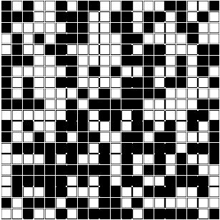
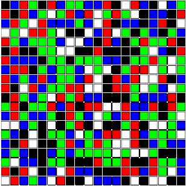

|
In both of the classes I've taught, (Statistics and Probability) I've included a programming component in R and R-Studio. The students had weekly labs where they used R to analyze a data set, or simulate the outcome of a random experiment.
The feedback on these labs has been quite positive, even among students who had no prior experience with computer programming.
Along with the labs, I periodically included computer demonstrations of topics covered during the lecture. Luckily, many useful demonstrations are already built into R, for example the qbirthday command is very useful when discussing the birthday paradox in probability, as is the buffon.needle command which is part of the animation package. Many other R demos can be found out on the internet, the snakes and ladders demo here was quite popular.
One example of Markov chains discussed in the textbook for the probability course was the stepping stone model. The idea is simple:
A square array of cells is colored randomly with black and white cells, and then in each stage of the model a cell is chosen at random, and its color is changed to be that of one of its neighbors, again chosen at random.
The model is presented as an example of a Markov chain that is difficult to analyze using its transition matrix, but is nevertheless easy to simulate. It is readily seen that the model forms an absorbing Markov chain. (The all black or all white states are absorbing.) Using martingales, it is also relatively easy to show that the probability of ending up in a given absorbing state is equal to the ratio of cells with that color.
The visualization of the model also makes for a great classroom demonstration. Unfortunately, I was unable to find an example written in R, so I wrote one.

It's interesting how quickly the model changes from the initial randomness and uniformity to one with distinct regions dominated by one color or the other. The code for the demonstration is given below.
N=20 #Size of the grid
NCols=2 #Number of Colors used
Mat=c()
cols=c("black","white","red","green","blue","orange","purple","yellow","cyan","brown")
for(i in 1:(N*N)){
Mat=append(Mat,sample(1:NCols,1)) #Randomly initialize the grid
}
M = matrix(Mat,nrow=N)
plot(x=NULL,y=NULL,xlim=c(0,N+1),ylim=c(0,N+1),axes=FALSE,xlab="",ylab="",asp=1)
for(i in 1:N){
for(j in 1:N){
symbols(i,j,squares=0.9,xlim=c(0,N+1),ylim=c(0,N+1),
bg=cols[M[i,j]],add=TRUE,inches=FALSE)
}} #Draw the grid initially
while(TRUE){
x=sample(1:N,1)
y=sample(1:N,1) #Choose random cell
v=sample(c(-1,0,1),1)
h=sample(c(-1,0,1),1) #Choose random neighbor
if(!(y==1 && v==-1)&&!(y==N && v==1)
&&!(x==1 && h==-1)&&!(x==N && h==1)){
M[x,y]<-M[x+h,y+v] #update the square that changed
symbols(x,y,squares=0.9,xlim=c(0,N+1),ylim=c(0,N+1),
bg=cols[M[x,y]],add=TRUE,inches=FALSE)
}
}
|
Note that one can easily change the size of the array as well as the number of colors used when initializing the model by editing the first two lines. Increasing the number of colors makes the image even more mesmerizing and makes the effects of certain colors dominating different regions even more apparent.

|